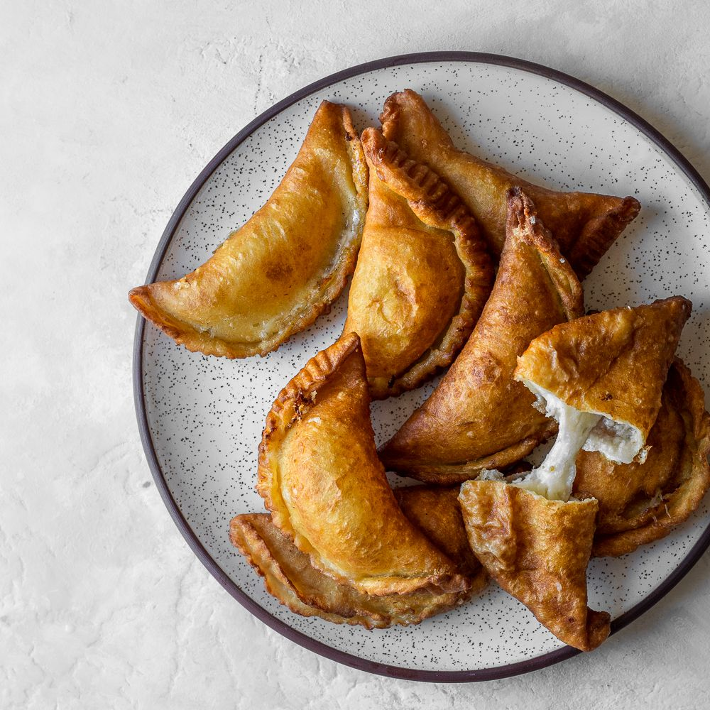

Cheese Empanadas

Description
Empanadas (sometimes known as empanadillas), at
their essence, consist of dough filled with something else
delicious, then deep fried to make a finger food.
Empanadas are easy to make, and so are ideal
for:
- Picnics
- Any day trip where a lot of people need to be fed
- Selling
Ingredients
- Dough discs (1 pack)
- Flour (1 small bag)
- Corn oil (1 small bottle)
- Cheese for frying (queso frito) (1 pack)
Steps for pre-preparing a single empanada
- Dice cheese into portions an eighth of the size of the disc.
- Add cheese onto disc.
- Enclose cheese with disc. You may optionally use a
fork to press down along the edge of the enclosure, though
a good application with your fingers should suffice.
- Powder the not-yet-fried empanada with some of the flour.
Steps for frying a set of five empanadas
- Pre-prepare five empanadillas, as described in the previous section.
- Preheat some oil in a frying pan, enough to almost
submerge five. Wait until the oil sizzles.
- Add the empanadas to the frying pan. After five minutes, flip each one over.
- Repeat until they're a suitable golden-brown color.
Back to Odin Recipes